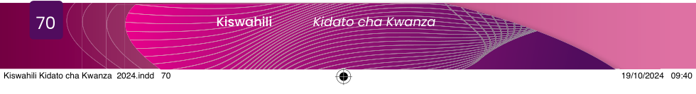

Anita:
Hakuna kazi ya kike, wala kazi ya kiume,Maji kichwani jitwike, nami kuwinda nivume,Tena jikoni upike, acha kasumba udume,Na chungu ukainjike, hakuna cha mwanamume.
Abaya:
Mwanamume kutafuta, akina dada kupika,Kuwinda bila kusita, kidume kupapatika,Sisi kupigana vita, kilimoni kutumika,Kazi yenu ni kusuta, umbea mmefurika.
Anita:
Ninakupa pole sana, kwayo imani potofu,Nakueleza bayana, akili kama ya pofu,Hebu acha kutukana, kuwa kaka mnyoofu,Acha kabisa kutuna, kujizolea wasifu.
Abaya:
Sijizolei wasifu, nakueleza ukweli,Ninyi kwetu wahafifu, tepetepe yenu mili,Hali zenu tahafifu, acha kataa kubali,Pole kwa kuwakashifu, ila nakupa ukweli.
Anita:
Sisi sote wakulima, mazao tunazalishaKila kazi tunavuma, kwa hili acha kubisha,Vilivyo tunajituma, pengine hadi kukesha,Masomo tunayasoma, ngazi zote tunatisha.Ulimwengu kutufunda, wayaona maajabu,Kwa sayansi si makinda, tunapata na majibu,Imelia parapanda, hatuwezi jitanibu,Mapambano kwa viwanda, maendeleo jawabu.
Abaya:
Usemacho dada kweli, haupo mfumo dume,Tupo sawa zetu hali, sote kazi tujitume,Twajidunisha kimali, eti kisa wanaume,Kabisa nimekubali, wenzangu tusitutume.Leo umenifundisha, sasa nitawajibika,Dhana udume komesha, kazi zote kufanyika,Si vyombo tu kuviosha, na kupika nitapika,Jikoni nitasafisha, moyoni sitokwazika.
Chanzo:Uduni wangu: Ngonjera za Watoto (Mbijima, 2020: 10 -11)
Maswali
1.Ngonjera uliyoisikiliza inahusu nini?
2.Watambaji wapo katika muktadha gani wa mazungumzo?
3.Shughuli zipi zimebainishwa katika ngonjera uliyoisikiliza?
4.Je, una maoni gani kuhusu mada ya ngonjera uliyoisikiliza?
